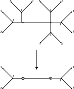

Abstract
A use case description for the Weighted Planar Trees Notation.
Use Case
Functionality
Mathematical description
Notation for arborescent knots
Bands and Plumbing Squares
Our first step in describing a notation for the arborescent knots [BS16] is describing a plumbing operation on bands. A band with a plumbing square is a band $S^1x[0,1]$, along with an oriented square on the band such that two of the sides of the square intersect the boundary of the band. Two examples of bands with plumbing squares can be seen in Example 6, note in the pink band the square should be viewed as looking through the surface of the band. That is, a half rotation of the band will yield a plumbing square matching the green band.
Example 6 (Two bands)


Plumbing bands
We will now glue the bands seen Example 6 together with an operation called plumbing. Consider the orientation given in the green band’s plumbing square. We will call the red arrow $x$ and the orange arrow $y$, similarly for the pink band $x^\prime$ and $y^\prime$.
We plumb the bands together along their plumbing squares, with the requirement that the orientation labels are mapped $x\to y^\prime$ and $y\to x^\prime$. Finally, we then forget the boundaries of the plumbing square, leaving only the joined boundaries of the bands. The result of plumbing as well as a local picture for plumbing can be seen in Example 7.
Example 7 (Plumbed bands)

|

|
To complete our band construction for knots, before plumbing, we add a series of half-twists into our bands with plumbing squares, seen in Example 8 and Example 9. When forming the half twists, we have two options for direction, we call one positive and one negative. A positive twist results in the “closer” boundary component having a positive slope, likewise for negative twists. It is important to note that the twists appear in unique regions of the band, which are determined by relative position of plumbing squares.
Example 8 
|
Example 9 
|
Combining these half twisted bands together with plumbing yields objects similar to those seen in
UC-N-APN-E-10. We require that no sequence of plumbing forms a cycle. Finally, turning
UC-N-APN-E-10 into a knot is as simple as forgetting the two cell leaving only the
boundary, seen in UC-N-APN-E-10.
Example 10 (Bands plumbed) |
Example 11 (An arborescent knot)
|

Weighted Planar Trees
This section will describe a combinatorial recipe for constructing knots from a collection of plumbing bands. This recipe will take the form of a tree, in the graph theoretic sense, a structure describing the collection of plumbing bands and how they are plumbed together. Before we begin constructing this combinatorial notation we, need to define some labels for the relative positions of bands in the smooth setting. This language will be reused when we transition to the more combinatorial setting.
Definition 4 (Relationships of Bands)
Given a band $B$ with plumbing squares, we call the set $C$ of bands plumbed to $B$ the children of $B$. Additionally, for $c\in C$ we call $B$ the parent of $c$ and the collection of $C-\LS c \RS$ the siblings of $C$.
Our goal is to take arborescent knots in the smooth setting built from plumbed bands and distill the essential information into a combinatorial context. The essential information we need to encode from the smooth setting is as follows:
The parent child relationship of bands
The relative positions of plumbing squares and twists on a band
Tackling first the encoding of parent child relationships. There are many combinatorial structures that can encode data similar to our required. Perhaps the most commonly used structure that can encode this data is an abstract graph, and since our data is acyclic, specifically an abstract tree. The data for the parent child relationships can be encoded by mapping bands to vertices and plumbing relationships to edges.
Unfortunately, since an abstract tree doesn’t maintain an order for child vertices, it fails for the second piece of essential information. To solve this problem, we will define a modified version of an abstract tree, the rooted plane tree.
Definition 6 (Rooted Plane Tree)
A rooted plane tree is an abstract tree with imbued with a strict total order on the vertices. We call the least vertex the root of the tree.
The set of vertices in a tree is discrete, so we can order the set with positive integer labels. Observe that in a rooted plane tree for each vertex $v$, the children of $v$ have an order inherited from the total order. For convenience, we will now place a convention on the order of a rooted plane tree. Let $\Gamma$ be a rooted plane tree, $r$ be the root of $\Gamma$, and $v_i\neq r$ be a vertex, with parent $p$. Further assume $v_i$ has order $i$, $p$ has order $j$ and the children $c_1,,\cdots,,c_n$ of $v$ have order $k_1,,\cdots,,k_n$. We require that an order on a rooted plane tree satisfy the following:
$r$ has order $1$
$j<i<k_1<\cdots k_n$
With this order requirement, a non-root vertex has a clear cyclic order starting from the parent vertex and increasing. This yields a unique embedding of $\Gamma$ into the plane.
The additional structure of rooted plane trees gives us a method for encoding relative positions of plumbing squares. The final data we need to record is the position and count of half twists relative to plumbing squares. We start by considering the local picture around a vertex Example 12 consisting of a vertex and a collection of bonds (half-edges) associated to plumbing squares.
Example 12 (The local view of a vertex)

We observed earlier that the half twists on a band must lay in a unique region determined by position relative to plumbing squares. This placement can be recreated in a rooted plane tree by annotating the local view of a vertex in Example 12 with an integer placed in the spaces between bonds. The relationship between a plumbing band and a weighted vertex in a rooted plane tree can be seen in Example 13.
Example 13 (The local view of a vertex with weight)

We can see a full example of a tree with its associated plumbed construction in Example 14. We call this fully realized combinatorial recipe a Weighted Planar tree.

{kind=link}
Weighted Planar Tangle Trees
Our construction to this point has been concerned exclusively with the notation for knots, we will
now give a modification of this notation for tangles. A tree, as in UC-N-APN-E-9, can be
modified to represent a tangle by allowing a “free” bond to be attached to a vertex, that is, to
allow one band to have a non-plumbed plumbing square. We can realize the non-plumbed square, a
Conway circle for a two string tangle.
Example 15 (Plane tree and plumbed bands)

|

|
Anatomy of a tree
Rings
We will now describe a special subtree of a weighted planar tree, locally appearing as Example 16.
Example 16 (Ring graph)

Now, resolving the plumbing, we arrive at bands as in Example 17.
Example 17 (Plumbed ring bands)

Notice that the boundary of these plumbed bands has three components, as seen in Example 18.
Example 18 (Ring boundary)

With an obvious flype and inversion of the Conway circle given by the non-plumbed square, we can arrange our plumbed bands into the standard tangle projection seen in Example 19. This tangle projection tells us that the subtree in Example 15 is one of the zero or infinity tangle with a ring.
Example 19 (Ring Tangle)
In practice, trees with ring subtrees appear frequently, often with multiple subtrees attached to a single vertex, as seen in the Example 20. This leaves us in a clunky notational situation, as the rings only impact data local to the ring subtree.
Example 20 (Typical tree)

To simplify our notation where rings are concerned, we simply forget any subtrees that form ring tangles. We instead note the count of number of ring subtrees at each vertex, augmenting the vertex with the count, as shown in Example 21, we call such a tree “abbreviated.”
Example 21 (Abreviated)

Essential vertices
Shifting away from special subtrees for a moment, we again consider a local picture of a vertex. It is useful during computation on weighted planar trees to partition vertices into two classes, essential vertices and non-essential vertices.
Definition 6 (Essential vertex)
We define an essential vertex as any vertex with valence greater than $3$ or ring number greater than $1$. A vertex is called non-essential if it has valence $0,1,2$ and no rings.
Definition 8 (Non-essential vertex)
A vertex is called non-essential if it has valence $0,1,2$ and no rings.
We see in Example 22 essential vertices in orange and non-essential in red.
Example 22 (Abreviated)

Sticks
The final important portion in the anatomy of a tree is to describe the sticks of a tree.
Definition 8 (Sticks of a weighted planar tree)
Let $\Gamma$ be a weighted planar tree and $\LS e_i\RS$ be the set of essential vertices of $\Gamma$ including their bonds. We call the collection subtrees $\Gamma_s=\Gamma \setminus \LS e_i\RS$ the sticks of $\Gamma$ and every connected component of $\Gamma_s$ a stick.
As an example, consider the tree seen in Example 22, the sticks of which can be seen in Example 23.
Example 23 (Sticks of a tree)

By construction, a stick of a tree has 0,1, or 2 free bonds, we call a stick with; 0 free bonds closed, 1 free bond half-open, and 2 free bonds open.
See also
Correspondence between sticks and rational tangles
Bonahon and Seibenman prove a correspondence between sticks and rational tangles [BS16] particularly when a stick is open it takes the form of the vignette seen below where each free bond forms a boundary component.

An Encoding Strategy for Arborescent Knots and Tangles
The various flavors of weighted planar tree we have seen thus far are a useful tool for manipulation of arborescent tangles by human or machine. Unfortunately, the tree structure is quite difficult to store directly in a computer database. We will rectify this by introducing a linearization strategy for weighted planar trees. We can adjust the following linearization strategy for use with weighted planar tangle trees by prepending a label $\alpha$ from $V_4$.
Linearizing a vertex
We start by describing the linearization of a single vertex. Let $\Gamma$ be a weighted planar tree
and $\Gamma_v$ be a vertex $v$ of $\Gamma$ along with its bonds and weights, see
wpt-linear-fig-local. Let $c_1,,\cdots,,c_n$ be the ordered bonds connected to the
children of $v$. As we saw in the construction of weighted planar trees, there is a total order on
$\Gamma$. If $v$ has a parent, the lowest index bond of $v$ points to its parent, further when
realizing $\Gamma_v$ in the plane, $c_1$ points up.

Fig. 1 The local view of a vertex
The order of children induces a cyclic order in the plane starting with the parent bond, in the up
position. Leveraging this, our strategy for linearizing $\Gamma_v$ is to follow the cyclic order,
listing the weights and children in sequence. We imagine an arm sweeping out from the lowest index
bond picking up the data of each weight as it sweeps through, this can be seen in
wpt-linear-fig-COMPASS.

Fig. 2 @@@ TODO
Walking the tree
To expand the local method to capture the whole weighted planar tree, we need a method to move from $\Gamma_v$ to a child while recording this descent. We will descend the tree in a depth-first order. Annotating each local linearization with four sets of delimiters that indicate the change in depth in the tree. Each delimiter also communicates extra information about the subtree it is delimiting. The four sets of delimiters are as follows:
$\LB\RB$: Corresponds to a half open stick and is interpreted as a twist vector for a rational tangle. Note that, to align with the traditional notation, the twist vector is written in depth first post order.
$\LP\RP$: Corresponds to a vertex not on a half open stick with no ring number.
$\LA\RA$: Corresponds to a vertex not on a half open stick with ring number.
We will now walk through an example of the linearization algorithm. Let $\Gamma$ be a weighted
planar tree, and $v$ an arbitrarily select a vertex from $\Gamma$ as the root
wpt-rli-fig-22. We assume that all sticks of $\Gamma$ be proper stick. As we walk the
tree, the vertex currently being linearized will be called the object vertex. Beginning with the
root as an object vertex, we descend the tree in a depth-first order.

Fig. 3 Rooted tree
Appending $\LP\RN$ or $\LA\RN$ depending on if the object vertex has a ring number and noting the
ring number, if any. Next, we sweep out the local picture, as discussed in
linearize_a_vertex. However, when we encounter a child bond, we descend to the child. We
have two cases to consider, the child is essential or non-essential.
Case 1: The Child is Essential
If the child is essential, we restart the algorithm from the beginning with the essential vertex as the object vertex.
Case 2: The Child is Non-essential
When the child vertex is non-essential we are descending a stick of $\Gamma$ which can take two forms, open, and half-open.
Case 1a: The Stick is Open
When the stick is open, we note each level by the local linearization seen in
linearize_a_vertex. We delimit the levels of the stick by the delimiters $\LP\RP$ with
weights placed in the right most sections. Since the sick is open, the bottom of the sick is an
essential vertex. We restart the algorithm from the beginning with the essential vertex as the
object vertex.
Case 2a: The Stick is Half-open
When the stick is half-open, we append that stick as the twist vector for the corresponding rational tangle. We delimit the stick with $\LB\RB$ with all weights positive and separated by spaces where the leaf is the right most entry.
When we have exhausted the children for the object vertex, we close our linearization for that
vertex with the matching $\LN\RP$ or $\LN\RS$, and return to the parent linearization until all
parents have been exhausted. An example of a tree encoded with this strategy can be seen in
wpt-rli-fig-23.
Fig. 4 Encoded tree subtrees are indicated by color.
Computational Description
There are no special computational considerations for this use-case.
Bibliography
Francis Bonahon and Laurence C Siebenmann. New Geometric Splittings of Classical Knots and the Classification and Symmetries of Arborescent Knots. 2016. URL: https://dornsife.usc.edu/francis-bonahon/wp-content/uploads/sites/205/2023/06/BonSieb-compressed.pdf.